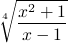

Consider the following simple bit of mathematical notation:

the TeX code that draws it:
\sqrt[4]{\frac{x^2+1}{x-1}}
and the same thing in an S-expresion syntax like Common Lisp:
(exp (/ (+ (exp x 2) 1)) (- x 1)) (/ 1 4))
and in a typical function-call notation like Python:
pow((x**2+1)/(x-1), 1/4)
I know which one I’d prefer for doing my math homework. For a while I thought S-expressions were superior to conventional mathematical notation because they are more consistent, but that consistency is what makes it harder to read complex nested expressions like the one above. Splitting it up into multiple lines with more whitespace would help, but it wouldn’t solve the fundamental problem: linear code doesn’t have enough shape. I can look at the math and immediately, without thinking about it, say “that’s a fraction inside a radical.” Determining the same thing from S-expressions, function calls, or TeX requires me to mentally parse the code and build up the expression in my head. Maybe if I spent a lot more time reading code than I presently do I would achieve the same ease with code, but I can’t really believe that any programming language would ever be as easy to read as the math. As long as it’s linear (in some respect) code doesn’t provide enough visual information to engage the image-processing functions our brains excel at.
yeah, I hope fortress is good, too. I really want http://research.sun.com/projects/plrg/faq/index.html#six in my editor. now.
Use infix.cl for Infix (8*8+4) in Common Lisp.